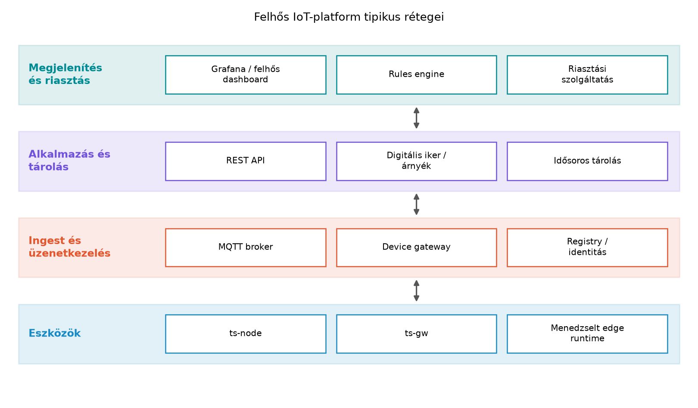

A könyv eddigi laborjaiban a TerraSense rendszert saját
komponensekből építettük fel: ts-node a Zephyr-alapú
szenzorcsomópont, ts-gw a C++-os gateway,
ts-backend a Spring Boot szolgáltatás, Mosquitto a broker,
TimescaleDB a tárolás, Grafana a megjelenítés. Ez a rétegzett
architektúra jól működik akkor, ha a csapatnak van low-level, backend-
és üzemeltetési kapacitása, és ha a cél a teljes kontroll, a
testreszabhatóság vagy egy tanulási folyamat.
A valós ipari döntés azonban gyakran nem az, hogy tudunk-e ilyen rendszert építeni, hanem az, hogy érdemes-e fenntartani. Egy termék méretnövekedésével a flottakezelés, az OTA, a tanúsítvány-kezelés, a biztonsági monitorozás és a megfelelőség (például ETSI EN 303 645, EU Cyber Resilience Act) olyan költségeket generál, amelyeket egy platformszolgáltató méretgazdaságosan tud biztosítani. Ebben az alfejezetben a TerraSense saját komponenseit megfeleltetjük a felhős és nyílt forrású platformok tipikus szolgáltatásainak, majd egy döntési mátrixszal és költségbecsléssel segítjük a build vs. buy választást.
A nagy felhőszolgáltatók (például az AWS IoT Core, az Azure IoT Hub vagy a Google Cloud IoT) a TerraSense-hez hasonló architektúrákat kínálnak menedzselt szolgáltatásként. A tipikus komponensek az alábbiak; a konkrét szolgáltatásnevek gyorsan változhatnak, ezért minden platform esetén ellenőrizendők a dokumentációban.

A fenti ábra azt mutatja, hogy a felhős platformok ugyanazokat a rétegeket fedik le, mint a TerraSense saját összeállítása:
devices táblájának és a flottakezelésnek a felhős
megfelelője.device_config JSONB árnyék
mezőivel, amelyet a Flottakezelés: nyilvántartás,
konfiguráció, állapot alfejezetben vezettünk be.ts-gw szerepét veheti
át, sok esetben konténeralapú.Definíció. Menedzselt IoT-platform alatt olyan felhőszolgáltatást értünk, amely az eszközök csatlakoztatását, hitelesítését, üzenetkezelését, állapotkezelését és gyakran a feldolgozást is szolgáltatásként biztosítja. A fogyasztó általában az eszközök és az alkalmazáslogika szintjén dolgozik, az infrastruktúra üzemeltetését a szolgáltató vállalja.
A felhős platformok előnye a gyors indulás, a skálázhatóság és az, hogy a biztonsági alapszolgáltatásokat (például mTLS-végpont, tanúsítvány-visszavonás, hitelesítő adat-generálás) a szolgáltató karbantartja. A hátrány a szolgáltatói kötődés és a költség, amely nagy üzenetszámnál jelentős lehet.
A nyílt forrású alternatívák a felhős platformokhoz hasonló funkcionalitást kínálnak, de a kód és az üzemeltetés a saját infrastruktúrába kerül. A leggyakrabban említett rendszerek:
ts-backend +
TimescaleDB kombinációjának nyílt forrású felbontása lehet.ts-backend az ingestet és a REST API-t, a TimescaleDB
a tárolást. A flottakezelést és az OTA-t pedig az Eszközmenedzsment: provisioning, OTA, flotta és a
Flottakezelés: nyilvántartás, konfiguráció,
állapot alfejezetekben leírt mintákra építjük.A nyílt forrású platformok közös jellemzője, hogy a kód elérhető és auditálható, a rendszer a saját Kubernetes- vagy Docker-infrastruktúránkon futhat, és nincs külső felhőszolgáltatóhoz kötve. Ugyanakkor az üzemeltetés, a méretezés és a biztonsági frissítések a saját csapat terhét növelik, a választott platform API-ja, adatmodellje és a hozzá értő szakemberek pedig technológiai és szervezeti kötődést hoznak létre.
A következő táblázat a saját építésű rendszer (TerraSense), a nyílt forrású platform és a menedzselt felhős platform fő szempontjait foglalja össze.
| Szempont | Saját építés (TerraSense) | Nyílt forrású (ThingsBoard, Hono/Ditto) | Menedzselt felhős |
|---|---|---|---|
| Induló költség | alacsony, de nagy mérnöki ráfordítás | közepes (telepítés, konfigurálás) | alacsony (konzol, SDK) |
| Működési költség | alacsony – saját infra | közepes – saját infra üzemeltetése | magas – használatarányos, de kiszámítható |
| Kontroll és testreszabás | teljes | jó – a kód módosítható | korlátozott – a szolgáltatás adottságai |
| Szolgáltatói, technológiai és adatkötődés | külső platformszolgáltatóhoz nem köt, de hoszting-, domain- és hardverbeszállítók itt is vannak; a saját séma, a TimescaleDB-kiterjesztés, az eszköz-SDK és a csapattudás köt | nincs licenckötés, de a platform API-ja, adatmodellje, upgrade-útja és a szakértelem köt | erős: API, auth-flow, adatmodell; szabványos protokollal, exporttal és szerződéses kikötéssel csökkenthető |
| Skálázhatóság | saját felelősség | saját felelősség | a szolgáltató biztosítja |
| Biztonság | saját felelősség (mTLS, X.509, OTA) | saját felelősség, de auditálható kód | részben menedzselt, de a felelősségi határok tisztázandók |
| Fejlesztési idő | hosszú – minden komponenst meg kell írni | közepes – a keretrendszer gyorsít | rövid – SDK-val és konzollal |
| Migrációs költség és lock-in | közepes: a saját kód és séma önmagunkhoz köt; export és dokumentált séma nélkül nő | közepes: platformváltás adatmodell- és API-migrációval jár | magas, de adathordozhatósági kikötéssel, szabványos interfésszel és migrációs teszttel csökkenthető |
A döntési mátrix alapján a TerraSense-edzőrendszerben a saját építés elsősorban akkor indokolt, ha a tanulási cél, a teljes kontroll vagy az egyedi követelmények (például speciális rádióprotokoll, zárt telephelyi működés) elsődlegesek. A menedzselt felhős platform akkor racionális, ha a flotta mérete nagy, a csapat nem akar infrastruktúrát üzemeltetni, és a termék gyors piacra vitele a cél. A nyílt forrású platform jó kompromisszum, ha a szolgáltatói kötődés kizárt, de a teljes backend fejlesztését el szeretnénk kerülni.
A szolgáltatói kötődés (vendor lock-in) azt jelenti, hogy a rendszer a választott platform szolgáltatásaihoz, API-jaihoz és adatmodelljéhez kötődik, és a másik szolgáltatóra váltás jelentős fejlesztést igényel. A kötődést érdemes négy külön dimenzióban értékelni, mert a nyílt forrású vagy saját megoldás sem mentes mindegyiktől:
A migrációs költség ezért nem nulla akkor sem, ha a forráskód nyílt. A váltás tervezéséhez legalább a következő tételeket kell becsülni: adatexport és -import, a régi és az új rendszer párhuzamos üzemeltetése, az adapterek és a topic-/séma-leképezés átírása, az eszközök újraprovízionálása, a tanúsítványok újragenerálása, a csapat betanítása és a visszaállítási terv. Egy jó döntési dokumentum ezért nem azt állítja, hogy a lock-in nulla, hanem azt, hogy mekkora a kilépés költsége, mennyi ideig tart, és milyen szerződéses vagy technikai feltételek csökkentik.
A TerraSense rendszerben az MQTT, a topic-konvenció
(terrasense/<site>/<node>/telemetry stb.), a
JSON-alapú telemetria-séma és az X.509-tanúsítványok mind szabványos
vagy nyílt elemek. Ezért a TerraSense saját backendjének cseréje egy
másik MQTT-kompatibilis platformra az eszközoldalon viszonylag kis
változtatással járhat. Ez a hordozhatóság egyik kulcsa, de nem jelenti
azt, hogy a teljes váltás költségmentes: a backend ingest-adapterét, az
adatbázis-sémát, a riasztási szabályokat és a flottakezelés API-ját
külön kell migrálni, és az átállás alatt párhuzamos üzemeltetésre lehet
szükség.
A menedzselt platformok gyakran kínálnak saját SDK-t, topic-struktúrát vagy auth-flow-t. Ha ezeket az eszközbe égetjük, a váltás költséges. A jó gyakorlat az, hogy az eszköz csak szabványos protokollokat (MQTT, CoAP, TLS, CBOR/JSON) használjon, a platform-specifikus SDK-t pedig csak az edge-en vagy a backend oldalán alkalmazzuk. Így a szolgáltatóváltás eszközoldali része a broker-végpont és a hitelesítési konfiguráció cseréjére korlátozódhat; a backend- és adatoldali migráció ettől még külön tervezendő, és a kilépési tervet a bevezetés előtt kell megírni.
A költségmodell illusztrálásához készítsünk egy feltételezett becslést egy 1000 eszközös TerraSense flottára. Az alapforgatókönyv a A TerraSense mintarendszer architektúrája és a Nem funkcionális követelmények: energia, költség, élettartam, megbízhatóság, biztonság alfejezetekben rögzített 10 perces normál telemetriai ciklust használja, nem óránkénti küldést. Az eszközök tehát óránként 6, havonta üzenetet küldenek. A teljes flotta havi üzenetszáma:
Tegyük fel, hogy minden üzenet mérete 200 B, tehát a havi forgalom:
A menedzselt felhős platformoknál a díj rendszerint az üzenetek száma, a feldolgozott byte-ok és az extra szolgáltatások (például OTA, tanúsítványtárolás) alapján képződik. Feltételezett árakkal (ezek nem ellenőrzött aktuális listaárak, csak a modell szemléltetésére szolgálnak):
Ekkor a havi költség az alapforgatókönyvben:
Havi összesen körülbelül 56 USD, évente körülbelül 672 USD. Ez a használatarányos díj azonban nem azonos a teljes birtoklási költséggel (TCO), mert a saját üzemeltetésben a mérnöki munka, az ügyelet, a mentés, a rendelkezésre állás és a frissítés költsége is jelentkezik, a menedzselt oldalon pedig a támogatási csomag és az integráció.
Érzékenységvizsgálat. Ha az eszközök óránként küldenek (ez nem az alapkövetelmény, csak egy ritkább változat), a havi üzenetszám 720 000, a forgalom 144 MB, a díj pedig USD. Az óránkénti változat tehát alig olcsóbb, mert az eszközmenedzsment fix díja dominál. Ha viszont 200 eszköz 5 másodpercenként küld, a havi üzenetszám 107 136 000 lesz, az MQTT-díj önmagában 107,14 USD, a tárolási díj pedig 42,85 USD, így a használatarányos díj körülbelül 200 USD/hóra nő. Ez mutatja, hogy a nagy adatgyakoriság a menedzselt költséget is megemeli, de 1000 eszköznél a mérnöki munka még mindig nagyobb tétel lehet.
Teljes birtoklási költség (TCO) azonos szolgáltatási szinten. Az összehasonlítás hároméves időtávra, 1000 eszközre és azonos, 99,9%-os rendelkezésre állási célra készül. Mindkét oldalon feltételezzük a napi mentést, a 30 napos visszatartást, a monitorozást, a biztonsági frissítéseket, a TLS-t és a rendelkezésre álló ügyeletet; a saját oldalon a 99,9% két csomópontos HA-val és ügyelettel érhető el, ami nem szerződéses SLA, hanem tervezési cél. A mérnöki óradíj 60 USD, az ügyeleti óradíj 75 USD; ezek szintén illusztratívak. A táblázat minden sora feltételezett, nem aktuális listaár:
| Költségtétel | Saját üzemeltetés (3 év) | Menedzselt platform (3 év) | Megjegyzés |
|---|---|---|---|
| Infrastruktúra vagy használat | 3 600 USD | 2 018 USD | saját: 100 USD/hó (VM, tárhely, HA, mentés, monitorozás, domain); menedzselt: 56 USD/hó használat |
| Támogatás | 0 USD | 9 000 USD | menedzselt: 250 USD/hó támogatási csomag (üzleti órák + 24/7 eszkaláció); saját: a csapat látja el |
| Mérnöki munka | 86 400 USD | 17 280 USD | saját: 0,25 FTE (40 óra/hó); menedzselt: 0,05 FTE (8 óra/hó) |
| Ügyelet | 43 200 USD | 0 USD | saját: 16 óra/hó; a menedzselt SLA része |
| Frissítés, biztonság, CI | 17 280 USD | 0 USD | saját: 8 óra/hó; a menedzseltnél a szolgáltató végzi |
| Bevezetés vagy migráció | 7 200 USD | 4 800 USD | saját: 120 óra zöldmezős építés; menedzselt: 80 óra integráció |
| Betanítás | 2 400 USD | 1 200 USD | saját: 40 óra; menedzselt: 20 óra |
| Kockázati tartalék (10%) | 16 008 USD | 3 430 USD | incidens, kimaradás, árváltozás |
| Összesen (3 év) | 176 088 USD | 37 728 USD | a feltételezett egységárakkal |
| Havi egyenérték | 4 891 USD | 1 048 USD | 36 hónapra osztva |
A feltételezett modellben a menedzselt platform hároméves TCO-ja a saját üzemeltetésének mintegy 21%-a, mert a mérnöki és ügyeleti munka dominál. Ez az eredmény azonban nem univerzális: ha a csapat már rendelkezik a saját stackkel, az üzemeltetési tudás és a kapacitás adott, a saját oldal marginális készpénzköltsége csak az infrastruktúra 100 USD/hója lehet, miközben a menedzselt platform használati díja a flotta növekedésével nő. A döntéshez ezért a következő érzékenységeket kell külön kezelni: a mérnöki óradíj és a rendelkezésre álló szabad kapacitás, a flotta mérete és adatgyakorisága, az adatvisszatartási követelmény, a kilépési/migrációs költség, valamint az, hogy a szolgáltató támogatása valóban lefedi-e a kívánt ügyeleti szintet. A TerraSense tanulórendszerében a saját építés didaktikai és kontrollszempontból indokolt, de a labor infrastruktúrájának költsége nem tekinthető kereskedelmi TCO-nak.
A fenti számpélda illusztratív, az árak feltételezettek. A tényleges döntéshez a szolgáltatók aktuális díjszabását, a pontos üzenetszámot, a támogatási szerződést és a saját csapat valós kapacitását kell használni. Az ár-összehasonlítást mindig azonos szolgáltatási szintre, azonos időtávra és a kilépési költséget is tartalmazó TCO-modellre kell alapozni.
A Matter (korábban Project CHIP) az okosotthon-eszközök interoperabilitását célzó, a Connectivity Standards Alliance (CSA) által gondozott szabvány. Célja, hogy egy eszköz egyszer működjön a nagy okosotthon-ökoszisztémákkal (például Apple HomeKit, Google Home, Amazon Alexa), anélkül, hogy mindegyikhez külön kellene integrálni.
A Matter elsősorban alkalmazási rétegbeli szabvány: eszköztípusokat, klasztereket, attribútumokat, parancsokat és eseményeket, valamint egy interakciós modellt (olvasás, írás, feliratkozás, parancshívás) definiál. Emellett rögzíti a biztonsági és a beüzemelési (commissioning) folyamatot is. Nem egyetlen „szállítási réteg”, és nem lehet az MQTT egyszerű fordításaként leírni. A rétegek a következőképpen különíthetők el:
| Réteg | Matter-megfelelés | Megjegyzés |
|---|---|---|
| Alkalmazási adatmodell | eszköztípusok, klaszterek, attribútumok, parancsok, események | ez a réteg felel meg az MQTT payload-sémának és a topic-szemantikának |
| Interakciós modell | read, write, subscribe, invoke | állapotközpontú, nem naplóközpontú |
| Biztonság | PASE a kezdeti beüzemeléshez, CASE az operatív kapcsolathoz, DAC/PAI/NOC tanúsítványok | a két fázis biztonsági modellje eltér |
| Szállítás | TCP vagy UDP, UDP esetén MRP megbízhatósággal | a TCP nagyobb üzenetekhez és bizonyos munkamenetekhez használható |
| Hálózat | IPv6 | Thread, Wi-Fi vagy Ethernet hálózaton; border router szükséges a Thread esetén |
| Beüzemelés | BLE és/vagy mDNS felfedezés, majd PASE | a BLE csak a commissioning alatt játszik szerepet |
A Matter tehát IPv6-os hálózaton működik; a szállítási réteg TCP vagy UDP, a BLE pedig nem az operatív forgalom hordozója, hanem a kezdeti beüzemelés egyik csatornája. Az operatív kapcsolat a beüzemelés után IP-n, CASE-munkamenetben fut.
A beüzemelés fázisai külön kezelendők:
A TerraSense ipari-mezőgazdasági környezetében a Matter nem közvetlenül előírás, de a tanulsága fontos: a szabványos adatmodell és a közös provisioning-folyamat csökkenti az integrációs költséget, és növeli a hordozhatóságot. A Matter okosotthon-fókuszú, ezért nem váltja ki az ipari protokollokat (OPC UA, Modbus) vagy a nagy hatótávú LoRaWAN-t; a TerraSense belső kommunikációja továbbra is MQTT marad.
Ha a TerraSense-t később okosotthon-ökoszisztémába kellene
integrálni, akkor a ts-gw vagy a ts-backend
rétegben egy alkalmazásszintű Matter bridge kellene. A
bridge nem csomagszintű protokollfordító: Matter-eszköznek vagy
bridge-eszköznek látszik, bridged endpointokat hoz létre a
ts-node csomópontokhoz, és a terrasense/...
telemetriát, illetve parancsokat Matter-attribútumokra, illetve
-parancsokra képezi le. Ehhez a bridge-nek Matter stackre,
fabric-beüzemelésre és a TerraSense adatmodelljének leképezésére van
szüksége; a szűk erőforrású ts-node-ra nem telepítenénk
Matter stacket. A fordítás a message translator EIP-mintára vezethető
vissza, amelyet a Enterprise integrációs minták
IoT-ban alfejezetben alkalmaztunk, de itt az üzenetek szemantikája
is átalakul: a Matter állapotközpontú attribútumai és a telemetria
idősortárolása nem azonos fogalmak, ezért a bridge-nek kell eldöntenie,
mely mérések lesznek attribútumok, melyek események, és hogyan kezeli a
késleltetett vagy hiányzó frissítést.
A build vs. buy döntés során a leggyakoribb objektív hibák az alábbiak:
| Tünet | Ok | Javítás |
|---|---|---|
| A menedzselt platform első becslésben olcsó, de a számla váratlanul magas | Az árazás üzenetenként, byte-onként vagy szolgáltatásonként összetett; a tesztforgalom is számlázott | Készítsünk üzenetszám- és méretmodellt, használjunk alertet a havi keretre |
| A nyílt forrású platform telepítése után a frissítések elmaradnak | A csapat a telepítést üzemeltetésnek tekinti, de a frissítést nem ütemezi | A compose/Kubernetes verziókat foglaljuk be a CI/CD futamokba, a frissítést automatizáljuk |
| Az eszköz SDK-ját a platformra szabjuk, és a váltás lehetetlen | A platform-specifikus API-kat az eszköz firmware-jébe linkeljük | Az eszköz csak MQTT/CoAP és JSON/CBOR szinten kommunikáljon; a platform-SDK az edge-en vagy a backendben legyen |
| A saját rendszer biztonsági frissítései hónapokig csúsznak | A komponensek (Mosquitto, Zephyr, Spring Boot) verziókövetése nincs automatizálva | Használjunk konténer- és firmware-képek alapján SBOM-ot és automatizált CVE-ellenőrzést |
~/iot-labor/i065/decision.md
fájlban, amelyben a TerraSense flottára (1000 eszköz, óránkénti
telemetria) a saját, a nyílt forrású és a menedzselt opciót értékeli. A
dokumentum tartalmazzon egy szemponttáblázatot, a költségbecslést és egy
ajánlást.ts-backend kódját, és azonosítsa, mely
komponenseket lehetne kiváltani menedzselt szolgáltatásokkal. Írja le,
melyik cseréhez milyen interface-változtatás kellene ahhoz, hogy az
eszköz és a gateway kódjához ne kelljen hozzányúlni.Mert az MQTT csak a szállítási protokoll. A hordozhatósághoz szükséges a topic-konvenció, a payload-séma (JSON/CBOR), az eszközazonosítás (például node_id), a hitelesítési mechanizmus (X.509, JWT), a szekvencia- és időbélyegkezelés, valamint az árnyék/desired-reported szemantika is. Ha ezek közül bármelyik platform-specifikus, a váltás költséges lesz.
A 200 eszköz 5 másodpercenként küld, tehát percenként 12 üzenetet, óránként 720-at, naponta 17 280-at, havonta 518 400 üzenetet eszközönként. 200 eszközre ez 103 680 000 üzenet. A maradék 800 eszköz a 10 perces alapciklusban küld, ami eszközönként 6 × 24 × 30 = 4 320 üzenet, összesen 3 456 000 üzenet. A teljes havi mennyiség 107 136 000 üzenet. Az MQTT-díj: , szemben az alapforgatókönyv 4,32 USD-jével. A növekedés , azaz körülbelül 2380%. A tárolási díj is nő: 107 136 000 × 200 B = 21 427,2 MB, ennek díja 42,85 USD, így a használatarányos összeg az eszközmenedzsmenttel együtt körülbelül 200 USD/hó.
A decision.md például így épülhet fel:
# TerraSense build vs. buy – 1000 eszköz
## Szempontok
| Szempont | Saját | Nyílt forrású | Menedzselt |
## Költség (3 év, 10 perces alapciklus)
- Menedzselt használat: ~56 USD/hó + támogatás + integráció
- Saját infra: ~100 USD/hó (VM, HA, mentés, monitorozás, domain)
- Mérnöki munka és ügyelet: ... óra/hó × ... USD/óra
- Bevezetés és betanítás: ... óra
- Kockázati tartalék: a részösszeg 10%-a
## Lock-in és kilépés
- Szolgáltatói, technológiai, adat- és szervezeti kötődés
- Adatexport módja, formátuma és tesztje
- Kilépési költség, idő és párhuzamos üzem hossza
## Ajánlás
Kis flottánál a menedzselt platform gyors indulást ad. A tanulórendszer
esetén a saját építés marad a kontroll és a tanulási cél miatt. Nagy
adatmenetnél a saját infra versenyképes lehet, de a TCO-ban a mérnöki
munka, az ügyelet és a migráció is szerepel.ts-backend MQTT-ingestje cserélhető menedzselt device
gatewayre, ha a bejövő topicok és payload változatlanok. A TimescaleDB
cserélhető menedzselt idősoros adatbázisra, ha a schema és a
lekérdezések kompatibilisek. A flottakezelés (devices,
device_config) cserélhető felhős registry-re, ha az
eszközazonosító- és árnyék-modell megegyezik. A legfontosabb interface:
az MQTT-topic-szerződés és a JSON-séma, ezért ezeket explicit,
verziózott szerződésként kell kezelni.Az alfejezet a TerraSense saját komponenseit a felhős és nyílt
forrású IoT-platformok tipikus szolgáltatásaival feleltette meg. A
felhős platformok device gatewayt, registryt, shadower, rules enginet,
idősoros tárolást és OTA-menedzsmentet kínálnak; ezek rendre a
TerraSense Mosquitto, devices tábla,
device_config árnyék, riasztási szabályok, TimescaleDB és
saját OTA-folyamatainak felelnek meg. A nyílt forrású alternatívák
(ThingsBoard, Eclipse Hono/Ditto) a saját építés és a menedzselt
szolgáltatás közötti kompromisszumot kínálnak. A döntéshez nem elég a
havi használati díjat összevetni: a 10 perces alapciklusra számolt,
azonos szolgáltatási szintű, hároméves TCO-nak tartalmaznia kell a
mérnöki munkát, az ügyeletet, a mentést, a rendelkezésre állást, a
frissítést és a migrációt is. A lock-in értékelése négy dimenzióban
(szolgáltatói, technológiai, adat- és szervezeti kötődés) történik, és a
kilépés költségét akkor is meg kell becsülni, ha a forráskód nyílt. A
Matter esetében külön kell választani az IPv6-os hálózati réteget, a
TCP/UDP-s szállítást, a BLE-alapú commissioningot, a passcode-os PASE-t
és a tanúsítványos CASE-t; a Matter bridge alkalmazásszintű leképezés,
nem csomagszintű protokollfordító. Továbbvitt eredmény:
a felhős komponensek megfeleltetési táblázata, a build vs. buy mátrix és
a TCO-modell a Záróprojekt: a teljes TerraSense
rendszer összeállítása és átvétele alfejezet döntési dokumentumában,
valamint a Összefoglalás: döntési térkép,
ellenőrzőlista, továbbtanulás összefoglalójában közvetlenül
felhasználandó.
chip-tool commissioning naplójával lehet igazolni.